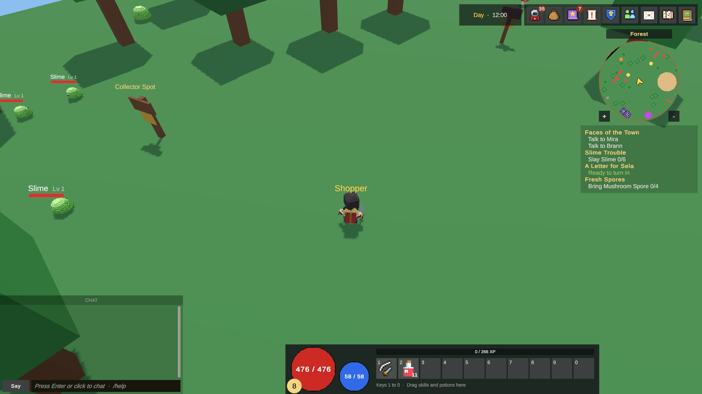

HUD 与窗口
HUD 是游戏时屏幕上的所有内容：各种条、快捷栏、聊天、图标栏、小地图以及每个游戏窗口。它是一个预制体，你可以修改样式、重新排列和扩展。本页介绍玩家看到的内容和按键、HUD 预制体的组织方式、它的检视器，以及如何修改样式或移动窗口。
玩家看到的内容


布局让屏幕中央保持空白，把所有内容放在边缘。
| 位置 | 内容 |
|---|---|
| 左下 | 聊天（500 × 270），带一条 "CHAT" 标签 |
| 底部，在聊天留出的空间内居中 | 底部栏：生命、法力、等级、经验和快捷栏的 10 个格子，以及增益 |
| 右上 | 图标栏：每个窗口一个按钮，另有商城、世界地图、怪物图鉴和游戏菜单 |
| 图标栏左侧 | 时钟：白天或夜晚以及时刻 |
| 图标栏下方 | 小地图，然后是任务追踪 |
附近有首领或精英时会出现首领血条，队伍框列出你的队伍成员及其生命。
图标栏
鼠标悬停在按钮上会显示窗口名称和按键。未分配的属性点或技能点在对应按钮上显示为小徽标，未读邮件在 Mail 按钮上显示为数量。收到信件时，"New mail" 会浮现在玩家上方。你的游戏关闭的模块，其按钮不会出现；商城按钮只在联网游戏中显示。
按键
| 按键 | 窗口 |
|---|---|
I |
背包 |
C |
角色 |
K |
技能 |
L |
任务日志 |
M |
世界地图 |
B |
怪物图鉴 |
O |
好友 |
G |
公会 |
N |
邮件 |
P |
商城 |
F8 |
GM 面板（版主及以上） |
Enter |
在聊天中输入 |
Esc |
关闭打开的窗口，或打开游戏菜单 |
每个窗口的按键是 HUD 预制体中其脚本上的一个字段（Toggle Key），所以你可以修改。完整按键列表见按键。
聊天
按 Enter 或点击聊天框任意位置即可输入。Enter 发送并释放键盘，Esc 取消。输入时聊天框会变暗。见聊天。
Esc 键
Esc 首先关闭当前打开的窗口或弹窗。只有在没有任何窗口打开时，它才会打开游戏菜单。当你在聊天中输入、回答确认框或打开 Settings 时，Esc 不会打开菜单。
小地图
圆形小地图顶部显示地图名称，并显示你周围的区域。一台摄像机从上方俯视，并随游戏摄像机旋转，所以小地图的上方就是屏幕的上方。传送门、队伍成员和首领离得远时会停留在边缘。用 + 和 − 按钮或鼠标滚轮缩放。点击它会打开世界地图。夜晚时它会像场景一样变暗。
世界地图
M 打开整张地图的俯视图，显示 NPC、首领和队伍成员的名字，以及每个传送门通往哪里。点击一个点，你的角色会走过去；路径由服务器计算。它在地下城副本中也能使用。
标记包括 NPC、传送门、怪物（普通、精英和首领）、其他玩家和你的队伍，每 0.4 秒刷新一次。
物品菜单和玩家菜单
- 在背包或装备中右键点击物品，打开物品菜单。
- 右键点击其他玩家（俯视角模式下），或在聊天中右键点击其名字，打开玩家菜单：Whisper、Trade、Invite to party、Add friend、Invite to guild、Duel 和 Report。
HUD 预制体
HUD 是 Game Settings > Interface > Hud Prefab（hudPrefab）中设置的预制体。示例使用的是 Samples/Starter/Prefabs/GameHud.prefab。游戏启动时它在每个客户端上创建一次，并在切换地图时保留。没有图形的服务器不会创建它。
| 字段 | 作用 | 默认值 |
|---|---|---|
Hud Prefab（hudPrefab） |
包含 HUD 和游戏窗口的画布。留空：由场景自带 | 示例：GameHud |
Item Details On Hover（itemDetailsOnHover） |
指向物品时显示其数值。关闭：点击物品才显示 | 关闭 |
画布以 1920 × 1080 为参考随屏幕缩放。玩家可以在 Settings 中用 Interface scale 进一步缩放。
组织方式
预制体的根节点有四个组，按此顺序绘制（后面的在上层）：
| 组 | 包含内容 |
|---|---|
| HUD | 底部栏、首领血条、任务追踪、图标栏、时钟、聊天、队伍框、小地图 |
| Windows | 背包、角色、技能、拾取、NPC 对话、任务、好友、公会及其联盟、徽章和历史窗口、交易、银行、锻造、NPC 商店、邮件、套装、市场、怪物图鉴、世界地图、商城、GM 面板、设置 |
| Popups | 玩家菜单、物品菜单和确认对话框 |
| Overlay | 物品提示框和拖动中的物品图标，由多个窗口共用 |
在每个组中，每个脚本都有自己的对象，拉伸到整个屏幕且没有图像，下面放着它显示和隐藏的面板。面板是该对象的子对象，所以面板关闭时脚本仍在运行（窗口按键就是这样工作的）。
套装窗口和确认对话框打开时会把自己的对象移到最上层，从而盖住其他窗口。
列表行是预制体
显示列表的窗口（公会成员、邮件、银行格子、任务行、商城卡片）为每个条目复制一行。这些行是 Samples/Starter/Prefabs/UI 中的预制体，例如 Guild Row、Mail Row、Bank Slot、Cash Shop Offer 或 Bestiary Row。修改一次预制体，所有行都会改变。作为其他预制体实例的行，比如物品格子（UIItem），是预制体变体。
每个窗口中以 Template 结尾的字段指向这些行。行模板也可以隐藏地放在窗口内部，这时窗口会把副本放在它旁边。
HUD 部件的检视器
选中任意 HUD 脚本的对象，它的检视器会显示：
- 这个部件的作用，以及哪些部分还是空的（"All parts set" 或 "3 empty"）。有些部分是可选的，提示框会说明是哪些。
- Select panel 和 Show panel / Hide panel，让你在编辑时看到关闭的窗口。
- Rows it copies：每个行预制体带 Open 按钮，行在窗口内部时则为 Select。
- 按区域分成卡片的字段。
分步操作：修改 HUD 样式
- 在你自己的副本上工作。 把
GameHud.prefab复制到你游戏的文件夹（Ctrl/Cmd+D，然后移动）。在 Game Settings > Interface 中把 Hud Prefab 设为这个副本。重建示例会从头生成它，所以不要为你的游戏修改示例的预制体。 - 打开预制体（双击）。展开 Windows，选中你要的窗口，例如 Inventory Window。
- 在它的检视器中按 Show panel 来查看它。
- 像任何 uGUI 一样修改面板子对象的图像、颜色、字体（TextMeshPro）和尺寸。保留窗口按名字查找的子对象的名字（提示框列出了这些名字，例如
Name、Status、Label、Art、Badge）。 - 对于列表行，在 Rows it copies 下按行旁边的 Open，然后编辑行预制体。
- 按 Hide panel，保存预制体，然后按 Play。
随状态变化的颜色，例如标签页颜色、行高亮、聊天输入时的颜色或徽标颜色，是窗口脚本上的字段，而不是在图像上。去脚本的卡片中找。
分步操作：移动窗口
- 打开你的 HUD 预制体，选中窗口的面板（它所属对象的检视器有 Select panel）。
- 在 Rect Transform 中修改锚点和位置。例如，把背包放到左侧：锚点预设选左中，轴心 (0, 0.5)，位置 X 设为 20。
- 让面板保持在它脚本的对象下面，这样面板关闭时脚本仍在运行，套件更新也能找到它。
- 保存并按 Play。
要移动整个 HUD 部件，例如小地图或图标栏，以同样方式在 HUD 组内移动它的面板。
分步操作：修改窗口按键
- 在 HUD 预制体中选中窗口的脚本对象，例如 Bestiary Window。
- 修改 Toggle Key。
- 如果你在图标栏按钮上显示了按键，同时更新按钮上的提示。
移除部件
在模块中关闭模块，而不是删除它的窗口：关闭的模块，其按钮和按键会自动消失。要去掉游戏不需要的部件，例如时钟，从 HUD 组中删除它的对象。部件之间的大部分关联是可选的，检视器会显示每个部件还有哪些部分是空的。
套件更新与你的 HUD
当套件的新版本添加窗口或按钮时，它通过作用于 Hud Prefab 中预制体的套件更新来添加，只补上缺少的部分，不重建其余内容。例如：Guild roles, emblem, history and alliance windows in the HUD、Shop window in the HUD、New shop window: categories, banner and offer pages。Overview 会列出你的项目需要的更新，并带有 Apply 按钮。见更新套件。
触屏
在手机和平板上，触控操作位于 HUD 旁边自己的画布上，并让 HUD 围绕它们排布。见触控操作。
在代码中
每个窗口都是带虚方法的 MonoBehaviour，所以你可以继承一个窗口并在预制体中替换它。MapPoints.Extra 可以在小地图和世界地图上添加你自己的标记。物品菜单和玩家菜单通过 ItemMenu.Entries 和 PlayerMenu.Entries 添加额外的条目。见覆盖套件行为。
单人模式与 MMO
两种模式下 HUD 相同。仅限联网的系统（公会、邮件、市场、商城）的窗口在单人模式下会显示 "Only on an online server." 之类的消息，或者不会打开。
常见错误
- 我对 HUD 的修改不见了。 你修改了示例的
GameHud.prefab，然后重建了示例。请在副本上工作。 - 窗口按按键打不开。 它的模块被关闭、它的 Toggle Key 被改了，或者它脚本的对象被禁用了。要禁用面板，永远不要禁用放着脚本的对象。
- 列表行显示为空。 窗口按名字查找的某个子对象被改名了。查看 Template 字段的提示框以了解这些名字。